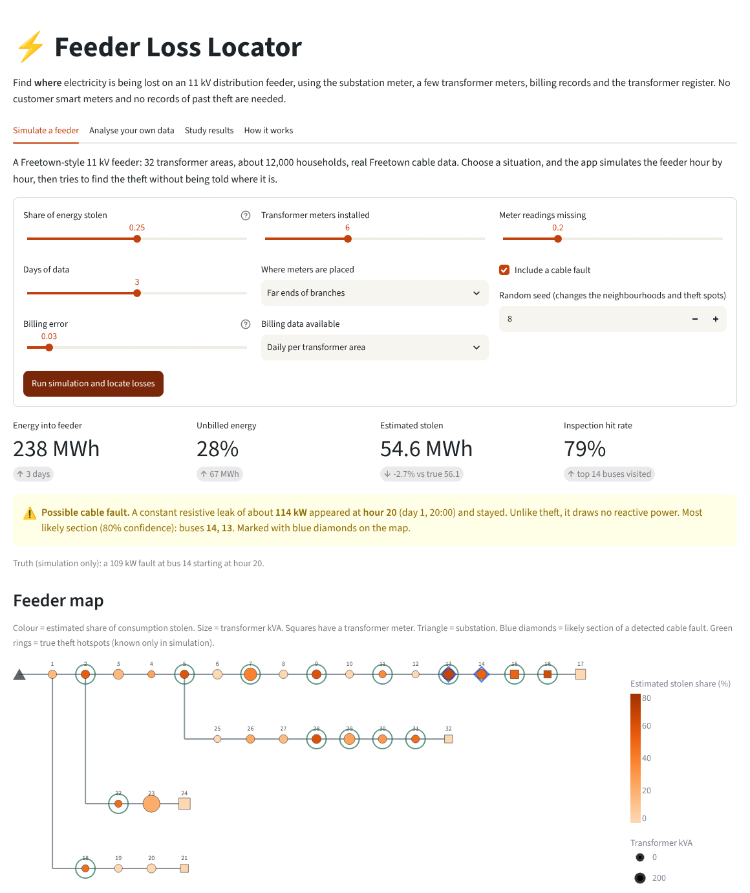
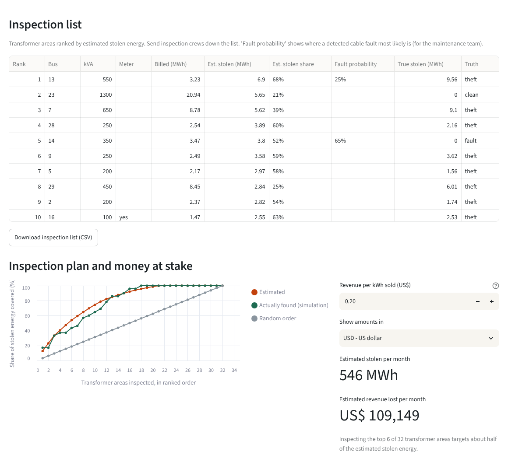

The app
The interactive app runs the real model. Simulate a feeder under any situation, or upload one real feeder's data, and get a feeder map of suspected theft, a ranked inspection list, an alert for cable faults, and the revenue at stake.


The problem
Sierra Leone's Electricity Distribution and Supply Authority (EDSA) loses a large share of the power it buys to technical losses and theft. Published estimates range from 30% to 53%. Knowing that energy is missing on a feeder is easy: compare the substation meter with what was billed. Knowing where it goes is hard, because most distribution transformers have no meter.
Many machine-learning theft detectors need customer smart meters and years of confirmed theft cases. EDSA has neither. This project asks what can be done with data it already holds.
What was built
On 100 simulated weeks, five methods were compared on 25 weeks held back for testing. The physics-informed method finds, for each feeder separately, the theft pattern that best explains the measurements while obeying power balance and the voltage drop through the feeder's real cables, checked against full AC power flow.
Results
Locating theft at transformers without a meter
Area under the ROC curve: 0.5 is a coin toss, 1.0 is perfect
| Method | Theft labels | Locating (AUC) | Error per transformer | Error in total stolen |
|---|---|---|---|---|
| Energy audit | none | 0.65 | 4.30 MWh | 3.4% |
| Combined rules | none | 0.90 | 2.44 MWh | 3.4% |
| Machine learning | 3 weeks | 0.92 | 3.39 MWh | 23.6% |
| Machine learning | 75 weeks | 0.97 | 1.79 MWh | 12.2% |
| Physics-informed | none | 0.92 | 2.11 MWh | 2.7% |
Errors are per transformer area over one week, and for the whole feeder over one week. 25 test weeks.
Findings
The biggest win needs no new hardware
Combining the transformer register (where demand should be) with the substation meter (how much is missing) lifts theft localisation at unmetered transformers from 0.65 to 0.90 compared with a plain energy audit.
Physics adds a consistent further gain, without labels
The best label-free localisation, 14% lower error per transformer and the most accurate total of any method that can locate theft. It matches machine learning trained on three weeks of confirmed theft, which the utility does not have.
Robust to messy field data
Losing 80% of transformer-meter readings, or 25% errors in cable data, barely changes the result (AUC 0.937 → 0.934).
Monthly bills and prepaid sales are enough
One billing total per transformer area for the period locates theft as well as daily figures (AUC 0.915 vs 0.916). Errors of 10–20% in prepaid sales mainly blur the estimated amount, not the location; analysing a month at a time reduces them.
Keep the transformer register accurate
A badly out-of-date register (ratings often off by 50%) costs about 0.06 AUC for every method. Fixing the register matters more than buying extra meters: going from 0 to 6 well-placed transformer meters improves localisation by only about 0.015.
Cable faults are told apart from theft
A leaking cable draws real power but no reactive power, unlike stolen household load. A detector built on this caught 28 of 30 faults with no false alarms in 30 clean weeks, timed each start to the hour, and narrowed the location to a section of about 8 of 32 transformers.
Limitation: simulation only
All results come from simulation calibrated to published Freetown data, not from field measurements. A test on one real feeder is the next step.
Running it on a real feeder
The code reads one standard data format, so a real feeder can replace the simulator without changing the method. For one 11 kV feeder, it needs:
- Hourly P, Q and voltage at the substation 11 kV breaker
- Hourly readings from any transformer check meters (gaps are fine)
- Energy sold per transformer area: daily, or one total for the month (prepaid vending or billing)
- The feeder layout, line types and lengths, and transformer kVA ratings
The interactive app accepts exactly these as five CSV files and returns a feeder map, a ranked inspection list and an estimate of revenue lost.
No customer smart meters are needed. A first real-feeder test would show whether the simulated results hold, and would replace the simulated weeks with real ones.
Sources
- Rogers, Diawuo & Domfeh (2024), Freetown household appliance survey, Int. J. Energy Research.
- Mansaray, Diawuo & Bantinge (2024), Freetown distribution network model, Solar Compass.
- JICA & Yachiyo Engineering (2009), Master Plan Study on Power Supply in Western Area, Sierra Leone.
- Trimble et al. (2016), World Bank WP 7788; Kourouma & Camara (2026), Phys. Sci. Int. J.; Kamara et al. (2021), IEOM.
Every parameter and how it is used: docs/sources.md. Full results, including a corrected earlier claim: docs/results.md.